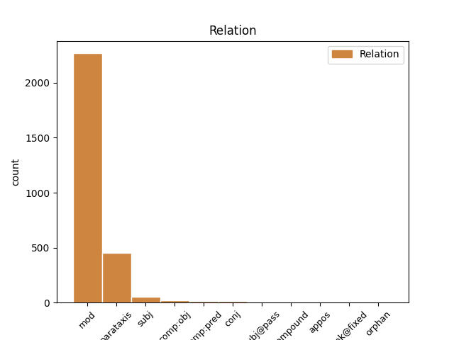
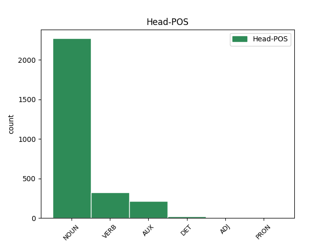
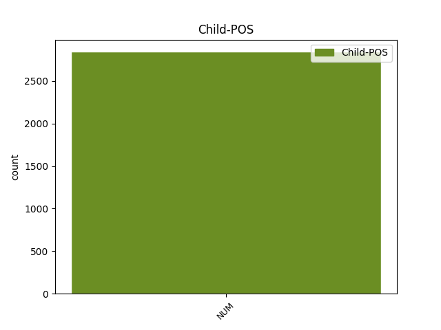

Distribution of features within this leaf



Agreement Rules sorted by frequency.
When the head token is NOUN and the dependent token is NUM.
1 Mediana _ _ _ _ 0 _ _ _
2 me _ _ _ _ 0 _ _ _
3 a _ _ _ _ 0 _ _ _
4 unui _ _ _ _ 0 _ _ _
5 set _ _ _ _ 0 _ _ _
6 de _ _ _ _ 0 _ _ _
7 date _ _ _ _ 0 _ _ _
8 statistice _ _ _ _ 0 _ _ _
9 distincte _ _ _ _ 0 _ _ _
10 ordonate _ _ _ _ 0 _ _ _
11 după _ _ _ _ 0 _ _ _
12 mărime _ _ _ _ 0 _ _ _
13 x1 _ _ _ _ 0 _ _ _
14 < _ _ _ _ 0 _ _ _
15 x2 _ _ _ _ 0 _ _ _
16 < _ _ _ _ 0 _ _ _
17 ... _ _ _ _ 0 _ _ _
18 < _ _ _ _ 0 _ _ _
19 xn _ _ _ _ 0 _ _ _
20 este _ _ _ _ 0 _ _ _
21 numărul _ _ _ _ 0 _ _ _
22 care _ _ _ _ 0 _ _ _
23 împarte _ _ _ _ 0 _ _ _
24 setul _ _ _ _ 0 _ _ _
25 de _ _ _ _ 0 _ _ _
26 date _ _ _ _ 0 _ _ _
27 în _ _ _ _ 0 _ _ _
28 două doi NUM Mcfp-l Gender=Fem|Number=Plur|NumForm=Word|NumType=Card 29 mod _ _
29 grupe grupă NOUN Ncfp-n Definite=Ind|Gender=Fem|Number=Plur 0 _ _ _
30 egale _ _ _ _ 0 _ _ _
31 ca _ _ _ _ 0 _ _ _
32 număr _ _ _ _ 0 _ _ _
33 . _ _ _ _ 0 _ _ _
When the head token is AUX and the dependent token is NUM.
1 Seria _ _ _ _ 0 _ _ _
2 de _ _ _ _ 0 _ _ _
3 distribuție _ _ _ _ 0 _ _ _
4 este _ _ _ _ 0 _ _ _
5 un _ _ _ _ 0 _ _ _
6 ansamblu _ _ _ _ 0 _ _ _
7 de _ _ _ _ 0 _ _ _
8 două _ _ _ _ 0 _ _ _
9 șiruri _ _ _ _ 0 _ _ _
10 finite _ _ _ _ 0 _ _ _
11 dintre _ _ _ _ 0 _ _ _
12 care _ _ _ _ 0 _ _ _
13 primul prim NUM Momsrly Case=Acc,Nom|Definite=Def|Gender=Masc|Number=Sing|NumForm=Word|NumType=Ord 14 subj _ _
14 este fi AUX Vmip3s Mood=Ind|Number=Sing|Person=3|Tense=Pres|VerbForm=Fin 0 _ _ _
15 șirul _ _ _ _ 0 _ _ _
16 elementelor _ _ _ _ 0 _ _ _
17 distincte _ _ _ _ 0 _ _ _
18 din _ _ _ _ 0 _ _ _
19 setul _ _ _ _ 0 _ _ _
20 de _ _ _ _ 0 _ _ _
21 date _ _ _ _ 0 _ _ _
22 statistice _ _ _ _ 0 _ _ _
23 sau _ _ _ _ 0 _ _ _
24 șirul _ _ _ _ 0 _ _ _
25 claselor _ _ _ _ 0 _ _ _
26 obținute _ _ _ _ 0 _ _ _
27 prin _ _ _ _ 0 _ _ _
28 gruparea _ _ _ _ 0 _ _ _
29 elementelor _ _ _ _ 0 _ _ _
30 din _ _ _ _ 0 _ _ _
31 setul _ _ _ _ 0 _ _ _
32 de _ _ _ _ 0 _ _ _
33 date _ _ _ _ 0 _ _ _
34 statistice _ _ _ _ 0 _ _ _
35 , _ _ _ _ 0 _ _ _
36 iar _ _ _ _ 0 _ _ _
37 cel _ _ _ _ 0 _ _ _
38 de- _ _ _ _ 0 _ _ _
39 al _ _ _ _ 0 _ _ _
40 doilea _ _ _ _ 0 _ _ _
41 este _ _ _ _ 0 _ _ _
42 șirul _ _ _ _ 0 _ _ _
43 de _ _ _ _ 0 _ _ _
44 frecvențe _ _ _ _ 0 _ _ _
45 corespunzătoare _ _ _ _ 0 _ _ _
46 . _ _ _ _ 0 _ _ _
When the head token is VERB and the dependent token is NUM.
1 În _ _ _ _ 0 _ _ _
2 cadrul _ _ _ _ 0 _ _ _
3 acestei _ _ _ _ 0 _ _ _
4 secvențe _ _ _ _ 0 _ _ _
5 , _ _ _ _ 0 _ _ _
6 la _ _ _ _ 0 _ _ _
7 fibrele _ _ _ _ 0 _ _ _
8 cu _ _ _ _ 0 _ _ _
9 răspuns _ _ _ _ 0 _ _ _
10 rapid _ _ _ _ 0 _ _ _
11 se _ _ _ _ 0 _ _ _
12 disting distinge VERB Vmip3p Mood=Ind|Number=Plur|Person=3|Tense=Pres|VerbForm=Fin 0 _ _ _
13 mai _ _ _ _ 0 _ _ _
14 multe _ _ _ _ 0 _ _ _
15 faze _ _ _ _ 0 _ _ _
16 , _ _ _ _ 0 _ _ _
17 fiecare _ _ _ _ 0 _ _ _
18 determinată _ _ _ _ 0 _ _ _
19 de _ _ _ _ 0 _ _ _
20 diferiți _ _ _ _ 0 _ _ _
21 curenți _ _ _ _ 0 _ _ _
22 ionici _ _ _ _ 0 _ _ _
23 ( _ _ _ _ 0 _ _ _
24 fig. _ _ _ _ 0 _ _ _
25 5.4 _ _ _ _ 0 _ _ _
26 ) _ _ _ _ 0 _ _ _
27 [ _ _ _ _ 0 _ _ _
28 3 3 NUM Mc-p-d Number=Plur|NumForm=Digit|NumType=Card 12 parataxis _ SpaceAfter=No
29 ] _ _ _ _ 0 _ _ _
30 . _ _ _ _ 0 _ _ _
When the head token is DET and the dependent token is NUM.
1 Băieții _ _ _ _ 0 _ _ _
2 nu _ _ _ _ 0 _ _ _
3 s- _ _ _ _ 0 _ _ _
4 au _ _ _ _ 0 _ _ _
5 lăsat _ _ _ _ 0 _ _ _
6 de _ _ _ _ 0 _ _ _
7 șotii _ _ _ _ 0 _ _ _
8 nici _ _ _ _ 0 _ _ _
9 de _ _ _ _ 0 _ _ _
10 astă _ _ _ _ 0 _ _ _
11 dată _ _ _ _ 0 _ _ _
12 , _ _ _ _ 0 _ _ _
13 și _ _ _ _ 0 _ _ _
14 s- _ _ _ _ 0 _ _ _
15 au _ _ _ _ 0 _ _ _
16 apucat _ _ _ _ 0 _ _ _
17 să _ _ _ _ 0 _ _ _
18 schimbe _ _ _ _ 0 _ _ _
19 pantofii _ _ _ _ 0 _ _ _
20 pasagerilor _ _ _ _ 0 _ _ _
21 , _ _ _ _ 0 _ _ _
22 puși _ _ _ _ 0 _ _ _
23 în _ _ _ _ 0 _ _ _
24 fața _ _ _ _ 0 _ _ _
25 ușii _ _ _ _ 0 _ _ _
26 , _ _ _ _ 0 _ _ _
27 spre _ _ _ _ 0 _ _ _
28 a _ _ _ _ 0 _ _ _
29 fi _ _ _ _ 0 _ _ _
30 lustruiți _ _ _ _ 0 _ _ _
31 a al DET Tsfs Gender=Fem|Number=Sing|Poss=Yes|PronType=Prs 0 _ _ _
32 doua doi NUM Mofs-l Gender=Fem|Number=Sing|NumForm=Word|NumType=Ord 31 comp:obj _ _
33 zi _ _ _ _ 0 _ _ _
34 de _ _ _ _ 0 _ _ _
35 dimineață _ _ _ _ 0 _ _ _
36 . _ _ _ _ 0 _ _ _
When the head token is ADJ and the dependent token is NUM.
1 Ridicând _ _ _ _ 0 _ _ _
2 la _ _ _ _ 0 _ _ _
3 pătrat _ _ _ _ 0 _ _ _
4 deviațiile _ _ _ _ 0 _ _ _
5 individuale _ _ _ _ 0 _ _ _
6 acestea _ _ _ _ 0 _ _ _
7 devin _ _ _ _ 0 _ _ _
8 pozitive pozitiv ADJ Afpfp-n Definite=Ind|Degree=Pos|Gender=Fem|Number=Plur 0 _ _ _
9 ( _ _ _ _ 0 _ _ _
10 sau _ _ _ _ 0 _ _ _
11 zero zero NUM Mc-p-l Number=Plur|NumForm=Word|NumType=Card 8 conj _ SpaceAfter=No
12 ) _ _ _ _ 0 _ _ _
13 . _ _ _ _ 0 _ _ _
When the head token is PRON and the dependent token is NUM.
1 Dintre _ _ _ _ 0 _ _ _
2 performanțele _ _ _ _ 0 _ _ _
3 României _ _ _ _ 0 _ _ _
4 pe _ _ _ _ 0 _ _ _
5 plan _ _ _ _ 0 _ _ _
6 internațional _ _ _ _ 0 _ _ _
7 menționăm _ _ _ _ 0 _ _ _
8 clasarea _ _ _ _ 0 _ _ _
9 de _ _ _ _ 0 _ _ _
10 3 _ _ _ _ 0 _ _ _
11 ori _ _ _ _ 0 _ _ _
12 pe _ _ _ _ 0 _ _ _
13 locul _ _ _ _ 0 _ _ _
14 IV _ _ _ _ 0 _ _ _
15 la _ _ _ _ 0 _ _ _
16 campionatele _ _ _ _ 0 _ _ _
17 feminine _ _ _ _ 0 _ _ _
18 europene _ _ _ _ 0 _ _ _
19 ( _ _ _ _ 0 _ _ _
20 1964 _ _ _ _ 0 _ _ _
21 , _ _ _ _ 0 _ _ _
22 1966 _ _ _ _ 0 _ _ _
23 , _ _ _ _ 0 _ _ _
24 1968 _ _ _ _ 0 _ _ _
25 ) _ _ _ _ 0 _ _ _
26 și _ _ _ _ 0 _ _ _
27 de _ _ _ _ 0 _ _ _
28 2 _ _ _ _ 0 _ _ _
29 ori _ _ _ _ 0 _ _ _
30 pe _ _ _ _ 0 _ _ _
31 locul _ _ _ _ 0 _ _ _
32 V _ _ _ _ 0 _ _ _
33 la _ _ _ _ 0 _ _ _
34 cele acela PRON Pd3fpr Case=Acc,Nom|Gender=Fem|Number=Plur|Person=3|PronType=Dem 0 _ _ _
35 masculine _ _ _ _ 0 _ _ _
36 ( _ _ _ _ 0 _ _ _
37 1957 1957 NUM Mc-p-d Number=Plur|NumForm=Digit|NumType=Card 34 mod _ SpaceAfter=No
38 , _ _ _ _ 0 _ _ _
39 1967 _ _ _ _ 0 _ _ _
40 ) _ _ _ _ 0 _ _ _
41 . _ _ _ _ 0 _ _ _
Disagree Examples:
1 Era _ _ _ _ 0 _ _ _
2 un _ _ _ _ 0 _ _ _
3 gest _ _ _ _ 0 _ _ _
4 care _ _ _ _ 0 _ _ _
5 , _ _ _ _ 0 _ _ _
6 dacă _ _ _ _ 0 _ _ _
7 ar _ _ _ _ 0 _ _ _
8 mai _ _ _ _ 0 _ _ _
9 fi _ _ _ _ 0 _ _ _
10 gândit _ _ _ _ 0 _ _ _
11 cineva _ _ _ _ 0 _ _ _
12 în _ _ _ _ 0 _ _ _
13 acești _ _ _ _ 0 _ _ _
14 termeni _ _ _ _ 0 _ _ _
15 , _ _ _ _ 0 _ _ _
16 ți- _ _ _ _ 0 _ _ _
17 ar _ _ _ _ 0 _ _ _
18 fi _ _ _ _ 0 _ _ _
19 putut _ _ _ _ 0 _ _ _
20 aminti _ _ _ _ 0 _ _ _
21 un _ _ _ _ 0 _ _ _
22 nobil _ _ _ _ 0 _ _ _
23 din _ _ _ _ 0 _ _ _
24 secolul secol NOUN Ncmsry Case=Acc,Nom|Definite=Def|Gender=Masc|Number=Sing 0 _ _ _
25 optsprezece optsprezece NUM Mc-p-l Number=Plur|NumForm=Word|NumType=Card 24 mod _ _
26 care _ _ _ _ 0 _ _ _
27 -ți _ _ _ _ 0 _ _ _
28 întindea _ _ _ _ 0 _ _ _
29 cutia _ _ _ _ 0 _ _ _
30 de _ _ _ _ 0 _ _ _
31 prizat _ _ _ _ 0 _ _ _
32 . _ _ _ _ 0 _ _ _
1 În _ _ _ _ 0 _ _ _
2 momentul _ _ _ _ 0 _ _ _
3 când _ _ _ _ 0 _ _ _
4 intrase _ _ _ _ 0 _ _ _
5 , _ _ _ _ 0 _ _ _
6 O'Brien _ _ _ _ 0 _ _ _
7 se _ _ _ _ 0 _ _ _
8 uitase _ _ _ _ 0 _ _ _
9 la _ _ _ _ 0 _ _ _
10 ceas _ _ _ _ 0 _ _ _
11 și _ _ _ _ 0 _ _ _
12 , _ _ _ _ 0 _ _ _
13 văzând _ _ _ _ 0 _ _ _
14 că _ _ _ _ 0 _ _ _
15 era _ _ _ _ 0 _ _ _
16 aproape _ _ _ _ 0 _ _ _
17 ora oră NOUN Ncfsry Case=Acc,Nom|Definite=Def|Gender=Fem|Number=Sing 0 _ _ _
18 unsprezece unsprezece NUM Mc-p-l Number=Plur|NumForm=Word|NumType=Card 17 mod _ _
19 se _ _ _ _ 0 _ _ _
20 hotărâse _ _ _ _ 0 _ _ _
21 , _ _ _ _ 0 _ _ _
22 în _ _ _ _ 0 _ _ _
23 mod _ _ _ _ 0 _ _ _
24 evident _ _ _ _ 0 _ _ _
25 , _ _ _ _ 0 _ _ _
26 să _ _ _ _ 0 _ _ _
27 rămână _ _ _ _ 0 _ _ _
28 la _ _ _ _ 0 _ _ _
29 Secția _ _ _ _ 0 _ _ _
30 Documente _ _ _ _ 0 _ _ _
31 pentru _ _ _ _ 0 _ _ _
32 cele _ _ _ _ 0 _ _ _
33 Două _ _ _ _ 0 _ _ _
34 Minute _ _ _ _ 0 _ _ _
35 de _ _ _ _ 0 _ _ _
36 Ură _ _ _ _ 0 _ _ _
37 . _ _ _ _ 0 _ _ _
1 Oare _ _ _ _ 0 _ _ _
2 întotdeauna _ _ _ _ 0 _ _ _
3 au _ _ _ _ 0 _ _ _
4 existat _ _ _ _ 0 _ _ _
5 străzile _ _ _ _ 0 _ _ _
6 astea _ _ _ _ 0 _ _ _
7 cu _ _ _ _ 0 _ _ _
8 case _ _ _ _ 0 _ _ _
9 din _ _ _ _ 0 _ _ _
10 secolul secol NOUN Ncmsry Case=Acc,Nom|Definite=Def|Gender=Masc|Number=Sing 0 _ _ _
11 nouăsprezece nouăsprezece NUM Mc-p-l Number=Plur|NumForm=Word|NumType=Card 10 mod _ SpaceAfter=No
12 , _ _ _ _ 0 _ _ _
13 degradate _ _ _ _ 0 _ _ _
14 , _ _ _ _ 0 _ _ _
15 cu _ _ _ _ 0 _ _ _
16 pereții _ _ _ _ 0 _ _ _
17 proptiți _ _ _ _ 0 _ _ _
18 în _ _ _ _ 0 _ _ _
19 stâlpi _ _ _ _ 0 _ _ _
20 de _ _ _ _ 0 _ _ _
21 lemn _ _ _ _ 0 _ _ _
22 , _ _ _ _ 0 _ _ _
23 cu _ _ _ _ 0 _ _ _
24 ferestrele _ _ _ _ 0 _ _ _
25 astupate _ _ _ _ 0 _ _ _
26 cu _ _ _ _ 0 _ _ _
27 carton _ _ _ _ 0 _ _ _
28 , _ _ _ _ 0 _ _ _
29 cu _ _ _ _ 0 _ _ _
30 acoperișurile _ _ _ _ 0 _ _ _
31 de _ _ _ _ 0 _ _ _
32 fier _ _ _ _ 0 _ _ _
33 ruginite _ _ _ _ 0 _ _ _
34 , _ _ _ _ 0 _ _ _
35 cu _ _ _ _ 0 _ _ _
36 zidurile _ _ _ _ 0 _ _ _
37 alea _ _ _ _ 0 _ _ _
38 stupide _ _ _ _ 0 _ _ _
39 ridicate _ _ _ _ 0 _ _ _
40 în _ _ _ _ 0 _ _ _
41 fața _ _ _ _ 0 _ _ _
42 grădinilor _ _ _ _ 0 _ _ _
43 și _ _ _ _ 0 _ _ _
44 care _ _ _ _ 0 _ _ _
45 se _ _ _ _ 0 _ _ _
46 prăbușeau _ _ _ _ 0 _ _ _
47 în _ _ _ _ 0 _ _ _
48 toate _ _ _ _ 0 _ _ _
49 direcțiile _ _ _ _ 0 _ _ _
50 ? _ _ _ _ 0 _ _ _
1 Apartamentul _ _ _ _ 0 _ _ _
2 lui _ _ _ _ 0 _ _ _
3 se _ _ _ _ 0 _ _ _
4 găsea _ _ _ _ 0 _ _ _
5 la _ _ _ _ 0 _ _ _
6 etajul etaj NOUN Ncmsry Case=Acc,Nom|Definite=Def|Gender=Masc|Number=Sing 0 _ _ _
7 șapte șapte NUM Mc-p-l Number=Plur|NumForm=Word|NumType=Card 6 mod _ SpaceAfter=No
8 , _ _ _ _ 0 _ _ _
9 așa _ _ _ _ 0 _ _ _
10 încât _ _ _ _ 0 _ _ _
11 Winston _ _ _ _ 0 _ _ _
12 , _ _ _ _ 0 _ _ _
13 care _ _ _ _ 0 _ _ _
14 avea _ _ _ _ 0 _ _ _
15 treizeci _ _ _ _ 0 _ _ _
16 și _ _ _ _ 0 _ _ _
17 nouă _ _ _ _ 0 _ _ _
18 de _ _ _ _ 0 _ _ _
19 ani _ _ _ _ 0 _ _ _
20 și _ _ _ _ 0 _ _ _
21 o _ _ _ _ 0 _ _ _
22 ulcerație _ _ _ _ 0 _ _ _
23 varicoasă _ _ _ _ 0 _ _ _
24 deasupra _ _ _ _ 0 _ _ _
25 gleznei _ _ _ _ 0 _ _ _
26 drepte _ _ _ _ 0 _ _ _
27 , _ _ _ _ 0 _ _ _
28 o _ _ _ _ 0 _ _ _
29 luă _ _ _ _ 0 _ _ _
30 pe _ _ _ _ 0 _ _ _
31 jos _ _ _ _ 0 _ _ _
32 , _ _ _ _ 0 _ _ _
33 încet _ _ _ _ 0 _ _ _
34 , _ _ _ _ 0 _ _ _
35 oprindu _ _ _ _ 0 _ _ _
36 -se _ _ _ _ 0 _ _ _
37 de _ _ _ _ 0 _ _ _
38 mai _ _ _ _ 0 _ _ _
39 multe _ _ _ _ 0 _ _ _
40 ori _ _ _ _ 0 _ _ _
41 să _ _ _ _ 0 _ _ _
42 se _ _ _ _ 0 _ _ _
43 odihnească _ _ _ _ 0 _ _ _
44 . _ _ _ _ 0 _ _ _
1 Scrise _ _ _ _ 0 _ _ _
2 cu _ _ _ _ 0 _ _ _
3 litere _ _ _ _ 0 _ _ _
4 mici _ _ _ _ 0 _ _ _
5 , _ _ _ _ 0 _ _ _
6 făcute _ _ _ _ 0 _ _ _
7 stângaci _ _ _ _ 0 _ _ _
8 : _ _ _ _ 0 _ _ _
9 4 4 NUM Mc-p-d Number=Plur|NumForm=Digit|NumType=Card 10 mod _ _
10 aprilie aprilie NOUN Ncms-n Definite=Ind|Gender=Masc|Number=Sing 0 _ _ _
11 1984 _ _ _ _ 0 _ _ _
12 . _ _ _ _ 0 _ _ _